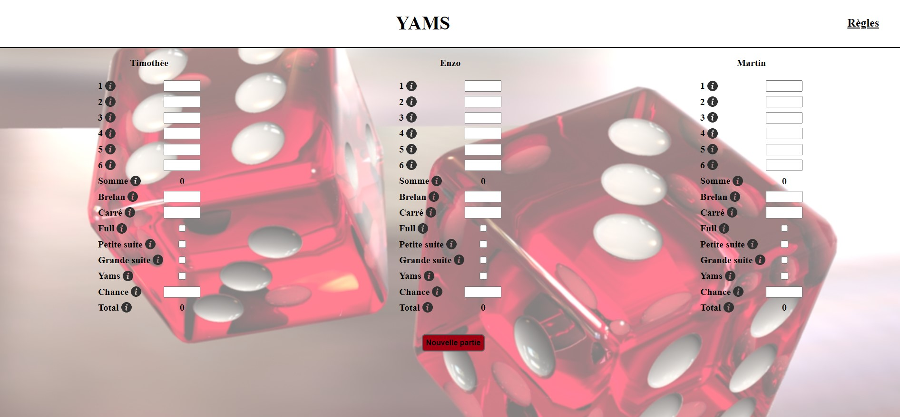
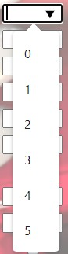

Serveur Distant
- Timothée Bermond
Je vais créer un site qui permet de compter les points au Yams.
Il est disponible ici
Liste des thâches
- Création du front
- Suivi du cours de Mr. Brucker en MON2.1
- Création d'un compte sur evh
- Création du back avec node
- Génération de cookies
- Création BD
- Lien back et front
- Lien back et BD : routes + API
Sprint 1
Durant le sprint 1 (25/11 - 7/12), je prévois :
- Tout d'abord de créer la partie front de mon site
- D'avoir entièrement suivi le cours dispensé en 2e année afin d'avoir les compétences pour déployer mon site sur un serveur distant.
- D'aller voir Mr. Brucker pour me créer un compte sur l'evh
Durant ce print j'ai eu le temps de créer toute ma partie front.

J'ai rencontré plusieurs difficultés : je voulais notamment ajouter un input avec une liste déroulante et une zone de texte. J'ai eu du mal à trouver comment faire, la solution était toute simple : utilisé une datalist qui en plus peut-être réutilisable pour plusieurs input.

Une autre difficulté a été la création d'indication au survol d'une image. Je me suis pris la tête avec des :hoover alors qu'il suffisait d'utiliser la propriété title.
J'ai également tenté d'implémenter une boucle for dans le fichier javascrpit afin de traiter les scores de tous les joueurs d'un seul coup ce qui m'aurait permis de créer facilement d'autres joueurs. Mais cette méthode n'a pas fonctionné et je n'ai pas eu le temps de chercher une méthode alternative.
Pour toute la partie CSS je me suis référé à mon MON1.2. Il y a juste la fonctionnalité :before que j'ai utilisé afin d'ajouter un fond d'écran partiellement opaque.
J'ai ensuite suivi la formation de Mr. Brucker, notamment le Projet Numérologie, afin de me former sur les serveurs web. Je n'ai pas eu le temps de tout parcourir mais je finirais ça d'ici la fin de la semaine.
Pour ce qui est du dernier point de ce sprint : la création du compte sur l'evh, je m'y suis pris un peu tard et n'ai pas eu le temps de le faire.
J'ai également pour idée d'ajouter une fonctionnalité qui permet de créer des groupes, par exemple des gens avec qui vous jouez souvent, et lorsque vous vous connecterez les noms des joueurs seront entrés automatiquement et vous aurez accès aux nombres de parties gagnées de chacun et potentiellement d'autres statistiques.
Sprint 2
Pour le sprint 2 je prévois de :
- Créer le back avec node
- Générer les cookies
- Créer la BD
- Mettre en place le lien back et front
- Ainsi que le lien back et BD : routes + API
- Faire en sorte que 2 joueurs puissent remplir les scores en même temps
Durant ce 2ème sprint, je me suis, tout d'abord, occupé de mettre en place node et express.
Pour cela, j'ai réorganisé mes fichiers en créant un dossier static.
De plus, j'ai séparé la partie création de la partie et déroulée de la partie, car un de mes objectifs est de faire en sorte que 2 joueurs puissent remplir les scores en même temps.
Puis j'ai initialiser le projet et installé le package express.
J'ai ensuite créé le fichier server.js qui contiendra les routes et un dossier back pour les calculs.
J'arrive donc à cette architecture :
__ back
|__ calcul.js
__ node_module
__ static
|__ Images
|__ index.html
|__ index.js
|__ yams.css
|__ yams.css
|__ yams.html
|__ yams.js
__ package-lock.json
__ package.json
__ server.js
Puis j'ai mis en place ma base de données. Pour cela, j'ai utilisé SQlite et sequelize.
Tout d'abord, je fais le lien avec la base de données SQlite:
const sequelize = new Sequelize({
dialect: 'sqlite',
storage: path.join(__dirname, 'db.sqlite')
});
Puis je créé mon modèle :
const Partie = sequelize.define('Partie',{
nombreJoueurs: {
type: DataTypes.INTEGER,
allowNull: false,
defaultValue:1
},
nameJ1 : {
type: DataTypes.STRING,
allowNull: false,
defaultValue:'Joueur 1'
},
nombre1J1: {
type: DataTypes.INTEGER,
allowNull: false,
defaultValue:0
},
...
chanceJ4: {
type: DataTypes.INTEGER,
allowNull: false,
defaultValue:0
},
totalJ4: {
type: DataTypes.INTEGER,
allowNull: false,
defaultValue:0
}
})
Je n'ai affiché qu'une partie car le modèle est très loin puisque je stock les points de tous les joueurs.
Je me suis demandé si il était possible de créer un modèle player puis de l'invoquer 4 fois dans mon modèle partie mais je n'ai pas trouvé la réponse.
Ensuite j'ai mis en place ma première route qui permet de créer la partie. Lorsque l'utilisateur clique sur le bouton suivant, une nouvelle partie est créée dans la base de données et les noms des joueurs sont récupérés dans les headers de la requête et enregistré dans la partie, puis un cookie est créé contenant l'id de la partie.
index.js :
document.getElementById("bouton_suivant").addEventListener("click", () => {
players = {
nbrPlayers: nbr_players,
player1: document.getElementById('text_choix1').value,
player2: document.getElementById('text_choix2').value,
player3: document.getElementById('text_choix3').value,
player4: document.getElementById('text_choix4').value
};
fetch('/create',{
method:'POST',
headers:{
'Content-Type': 'application/json',
'Players':JSON.stringify(players)
},
})
.then(
window.location.replace('./yams.html')
)
})
server.js :
app.use("/create", (req, res) => {
db.Partie.create({
}).then((partie) => {
parametres = req.rawHeaders.toString().split("{")[1].split("}")[0]
partie.nombreJoueurs = parametres.split(",")[0].split(":")[1]
partie.nameJ1 = parametres.split(",")[1].split(":")[1]
partie.nameJ2 = parametres.split(",")[2].split(":")[1]
partie.nameJ3 = parametres.split(",")[3].split(":")[1]
partie.nameJ4 = parametres.split(",")[4].split(":")[1]
res.cookie("id", partie.id)
partie.save()
res.end()
})
})
J'utilise une méthode un peu barbare pour récupérer les noms des joueurs mais je n'ai pas trouvé comment faire mieux.
Une fois la partie créée il faut que j'affiche le nom des joueurs ainsi que leur fiche de points.
J'ai tout d'abord voulu accéder à la base de données depuis le fichier yams.js mais je n'ai pas réussi donc j'ai implémenté une route /initialisation qui récupère le nombre de joueurs ainsi que leur nom dans la base de données et qui les affiche.
yams.js :
fetch('/initialisation')
.then(response => response.json())
.then(data => {
console.log(data)
if(data.nombreJoueurs == 1){
document.getElementById('nom_j1').textContent = data.nameJ1.split('"')[1]
document.getElementById('joueur1').classList.remove('hide')
document.getElementById('btn_new_game').classList.remove('hide')
}
else if(data.nombreJoueurs == 2){
document.getElementById('nom_j1').textContent = data.nameJ1.split('"')[1]
document.getElementById('joueur1').classList.remove('hide')
document.getElementById('nom_j2').textContent = data.nameJ2.split('"')[1]
document.getElementById('joueur2').classList.remove('hide')
document.getElementById('btn_new_game').classList.remove('hide')
}
else if(data.nombreJoueurs == 3){
document.getElementById('nom_j1').textContent = data.nameJ1.split('"')[1]
document.getElementById('joueur1').classList.remove('hide')
document.getElementById('nom_j2').textContent = data.nameJ2.split('"')[1]
document.getElementById('joueur2').classList.remove('hide')
document.getElementById('nom_j3').textContent = data.nameJ3.split('"')[1]
document.getElementById('joueur3').classList.remove('hide')
document.getElementById('btn_new_game').classList.remove('hide')
}
else if(data.nombreJoueurs == 4){
document.getElementById('nom_j1').textContent = data.nameJ1.split('"')[1]
document.getElementById('joueur1').classList.remove('hide')
document.getElementById('nom_j2').textContent = data.nameJ2.split('"')[1]
document.getElementById('joueur2').classList.remove('hide')
document.getElementById('nom_j3').textContent = data.nameJ3.split('"')[1]
document.getElementById('joueur3').classList.remove('hide')
document.getElementById('nom_j4').textContent = data.nameJ4.split('"')[1]
document.getElementById('joueur4').classList.remove('hide')
document.getElementById('btn_new_game').classList.remove('hide')
}
})